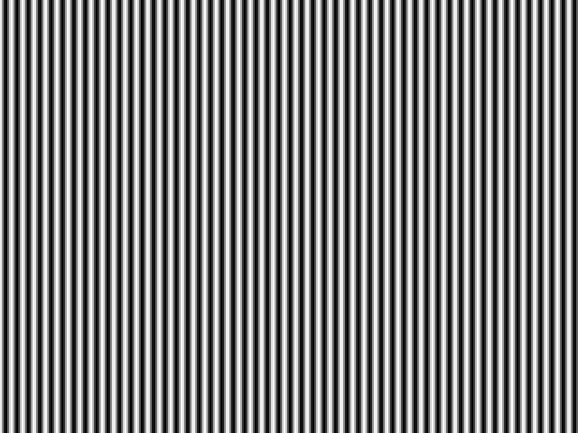
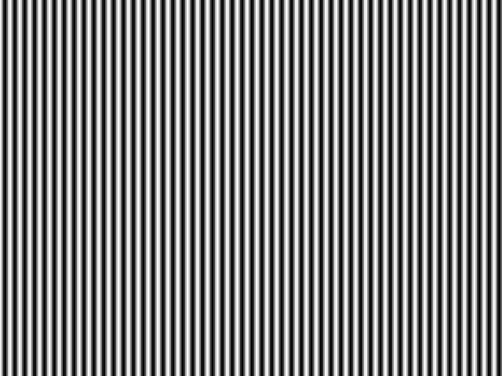
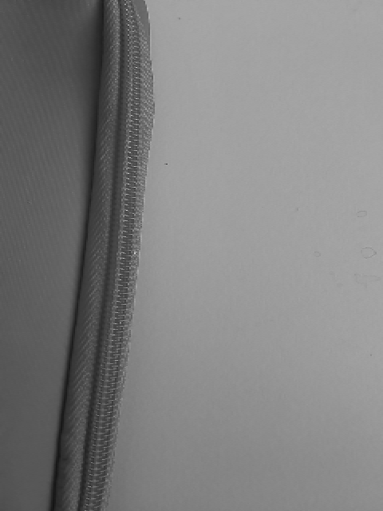
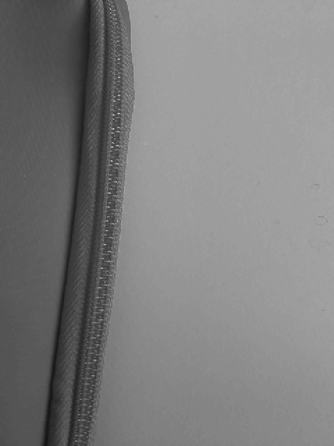
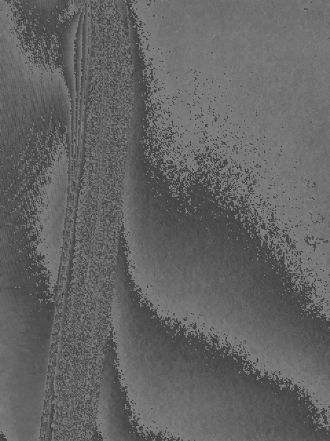

Beschreibung
Lösung

Das Abtasttheorem besagt, ähnlich wie bei audiosignalen, dass bei einer maximalen Frequenz fMax = 1/TMax die Abtastfrequenz fabtast = 1/Tabtast mehr als zwei Mal der fMax sein muss, um das Signal genau zu beschreiben. Der Grenzfall ist dabei fabtast = 2*fMax, da bei falschen Abtastpunkten das Signal immer schwarz überträgt und jeder Pixel damit schwarz dargestellt wird.
brightness = Math.sqrt{0.299*Math.pow(r,2) + 0.587*Math.pow(g,2) + 0.114*(Math.pow(b,2))}
Die drei Koeffizienten 0.299, 0.587 und 0.114 gewichten die drei Farbkomponenten hinsichtlich der menschlichen Helligkeitswahrnehmung. Denn bei gleichem Farbwert wird Blau vom Menschen dunkler wahrgenommen als Rot und Rot dunkler als Grün. Die Summe der drei Koeffizienten ergibt 1, entsprechend hat die Funktion den gleichen Wertebereich wie die drei Farbkomponenten.

Das Aliasing entsteht durch eine Bewegung, die schneller ist als die aufnehmbaren Bilder pro Sekunde des Aufnahmegeräts. Dadurch entsteht die Illusion, dass das Objekt sich gar nicht oder Rückwärts bewegt.



Downsampled Fläche

Schon beim ersten Downsampling mit Modulo 2, erkennt man die Verschlechterung im Bild

Flächenbild Bitreduktion

Schon ab der Reduktion um ein Bit, verschlechtert sich die Qualität des Flächenbildes stark.
Die Ränder der Objekte sind sehr kantig und pixelig.
Bei der Reduktion des Detailbildes sinkt die Qualität erst nach der Reduktion von 4 Bit stark/merklich.
Bitreduktion Detail

Bitreduktion Fläche

Wir haben eine Bitreduzierung von 4 verwendet und hier sieht man schon eine Wage Ähnlichkeit mit dem Uhrsprungsbild.